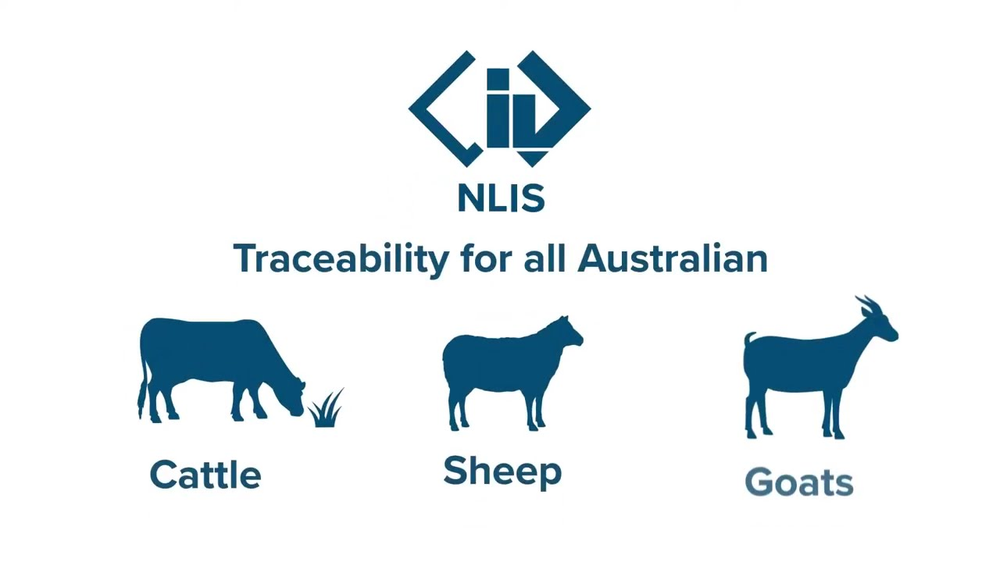

Learning purpose
Find and resolve missing, duplicated or inconsistent identifiers using the authorised reporting pathway.
Task 8 · Lesson 4 of 4
Find and resolve missing, duplicated or inconsistent identifiers using the authorised reporting pathway.
Learning purpose
Find and resolve missing, duplicated or inconsistent identifiers using the authorised reporting pathway.
Success criteria
Learning boundary
Supplementary learning and formative practice only. Current RTO assessment, local procedures and authorised supervision control real work.

Identification reconciliation compares the planned list, observed or recorded identifiers, tally and authorised register. The aim is to locate matches and differences without changing the evidence prematurely.
Each source should be labelled by date, revision, location and responsible person. An undated copy may help locate a question but should not silently replace the current register.
A discrepancy may be missing, duplicated, unreadable, transposed, linked to the wrong event or recorded in a different format. Naming the type helps the authorised custodian choose an appropriate investigation path.
Classification does not establish cause or fault. Record what differs, where each value appears and which additional current authorised source may resolve the relationship without guessing.
Do not erase, overwrite or backdate an original entry to make records align. The current enterprise correction process should preserve the earlier value, authorised correction, reason, date and responsible person.
A learner can draft a correction note using fictional data, but the authorised record custodian controls changes to real registers and any linked enterprise, regulatory or reporting duties.
A tally can reveal that a record-level mismatch may affect the total, but equal totals do not guarantee correct identity. One duplicate and one missing identifier can cancel numerically while leaving serious traceability gaps.
Reconcile both the individual or group entries and the final total. Report any result that cannot be matched without assumption through the current authorised workplace pathway.
Fictional worked example
Record evidence: In a fictional register, the planned list contains P31, P32, P33 and P34. The event sheet contains P31, P32, P32 and P34, so both totals equal four. Decision and reason: Chen recognises that the equal total hides one duplicate and one missing identifier; he cannot replace the second P32 with P33 without source evidence. Safe action: He marks the duplicate and missing pair and reports both records to the custodian. Result: The authorised register and source event are checked. Next check or record: Chen records the authorised correction with its reason and date.
A discrepancy report identifies the affected sources, exact entries, mismatch type, total effect and checks already completed. It also states what has not been confirmed.
Avoid accusing a person of causing the error unless the authorised investigation establishes that fact. The immediate priority is record integrity and any current livestock or enterprise decision that may rely on the identity.
A reconciliation is closed when the authorised person confirms the identity relationship and the approved correction process is complete across affected records. Related systems may need coordinated updating.
The website exercise supports logic and record literacy. It does not change a real register, satisfy a legal notification, authorise practical marking or provide formal competency evidence.

External media loads only after you choose it.
Source-linked video
Why watch: Identify the links that must be reconciled before a record can be trusted.
Watch for: Which identifiers and movement records would need to agree before the traceability record can be trusted?
Formative practice
Each option explains the consequence. These answers save only on this device.
Written application
Apply and keep a learning record
Compare two invented identifier lists and tally sheets. Highlight matches, duplicates, missing entries and format differences, then draft an authorised correction request without changing either source.
Learning record: A supplementary reconciliation worksheet and factual discrepancy report with an intact audit trail.
Lesson responses and the activity are formative learning only. Formal sufficiency and competence remain with the current RTO process.
Next: return to the task hub and follow the teacher-confirmed assessment direction.
Source basis: AHCLSK225 Release 1 tally, record, outcome-reporting and completion requirements, supported by livestock identification traceability concepts. Current regulatory and enterprise registers, record custodians and correction procedures control real reconciliation.